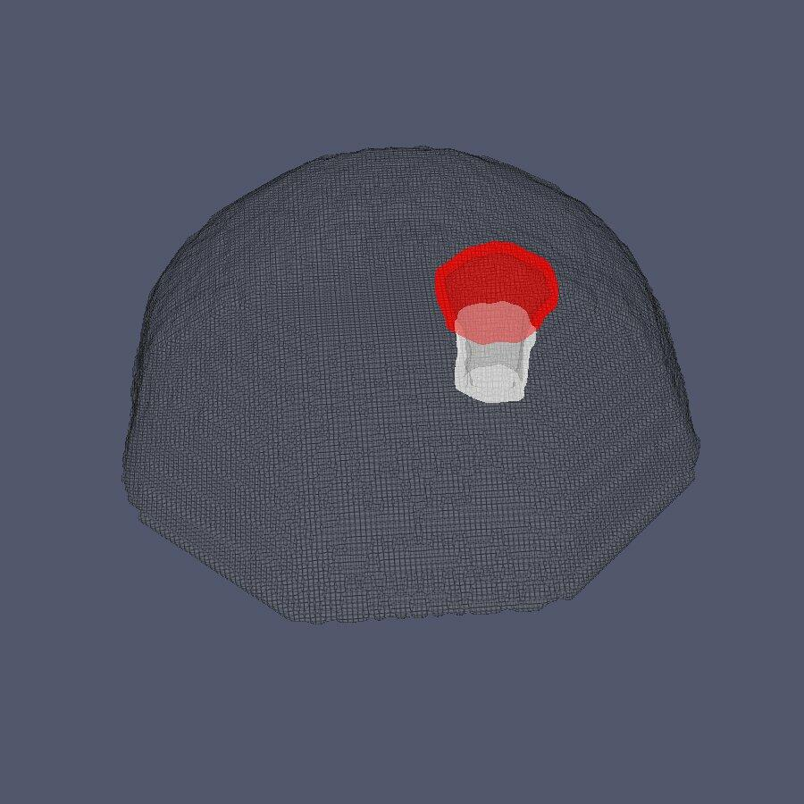
GT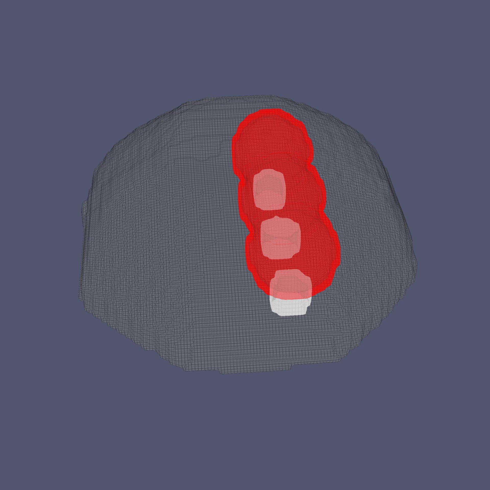
GT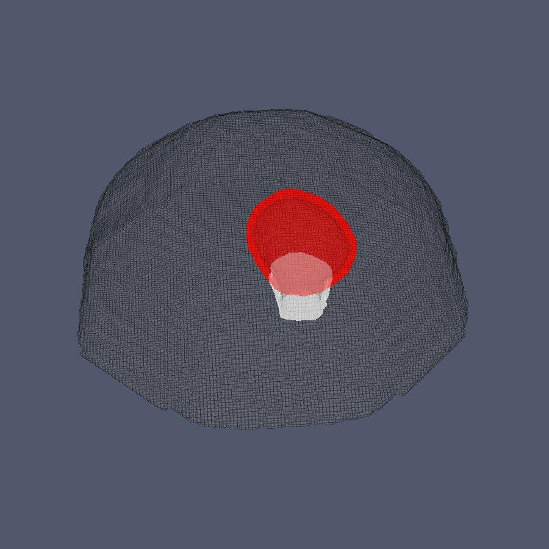
GT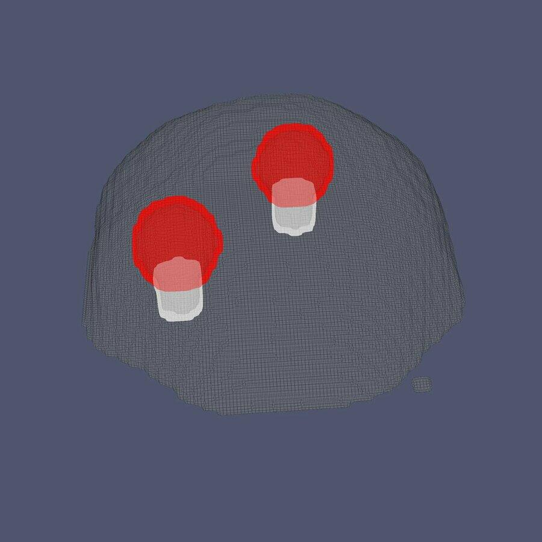
GT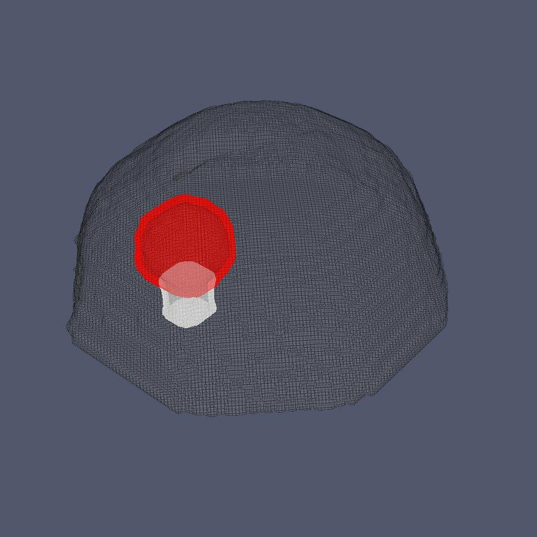
GT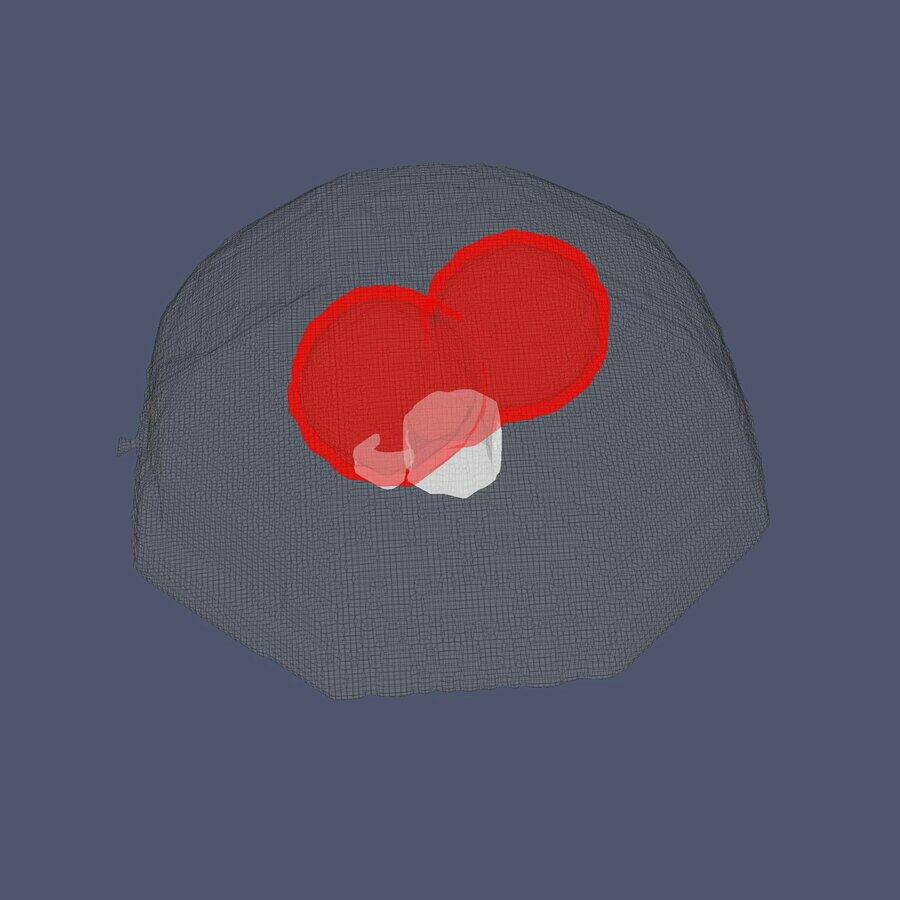
GT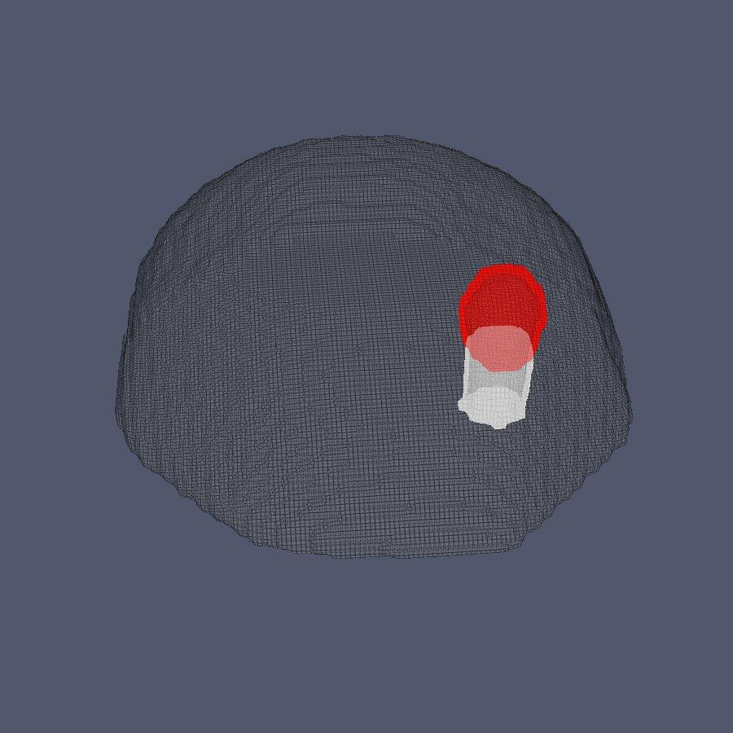
GT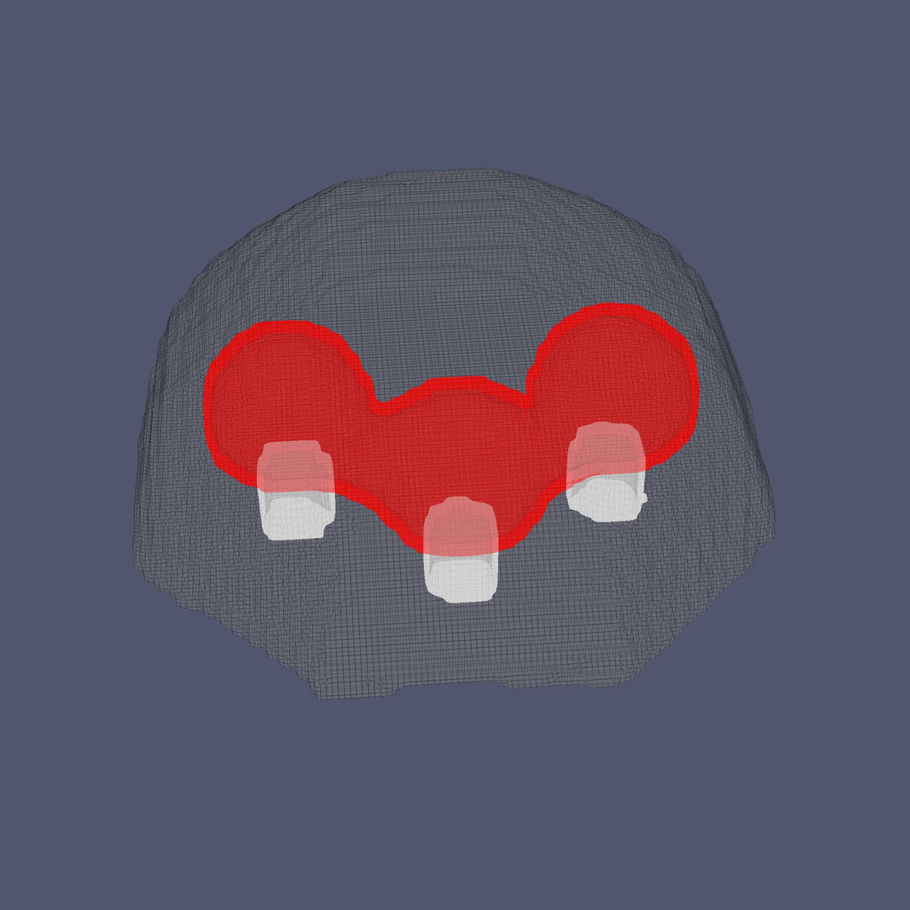
GT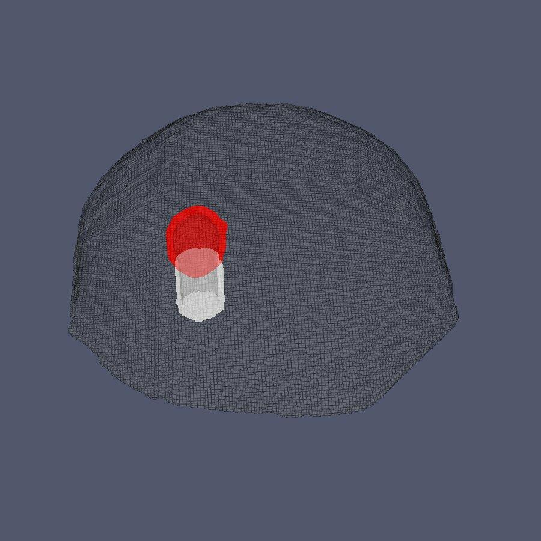
GT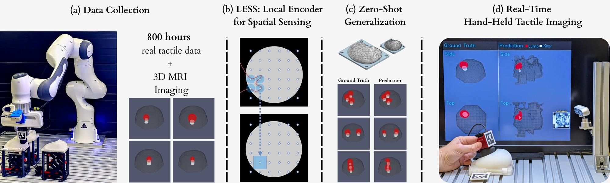
Palpation — the use of touch in medical examination — remains highly relevant today. In breast cancer, over 40% of US cases are first detected by palpation, motivating the development of tactile imaging: reconstructing the internal structure of soft objects from touch measurements
We propose LESS (Local Encoder for Spatial Sensing), a tactile imaging approach that exploits the local nature of touch. LESS achieves zero-shot compositional generalization to unseen geometries, supports spatial uncertainty estimation, and enables the first real-time, hand-held tactile imaging device with 3D reconstruction
We manufacture a soft, modular phantom consisting of a breast-shaped silicone shell and a gel insert containing a harder inclusion that varies in shape and location. The insert can be rotated inside the shell to produce different phantom configurations
Using a motorized lift and a Franka Panda manipulator equipped with a gel-based tactile sensor, we collect over 800 hours of tactile interaction data across the phantom library
To obtain ground-truth internal geometry, each phantom is scanned with an MRI machine, producing volumetric images that clearly resolve the phantom's internal components
The key insight behind LESS is that touch is inherently local: the tactile response at a given position depends primarily on the nearby sub-surface structure, not on distant regions
We spread particles at a grid of locations and use pose-based force prediction to learn a representation of the sequence of measurements in the receptive field around each location
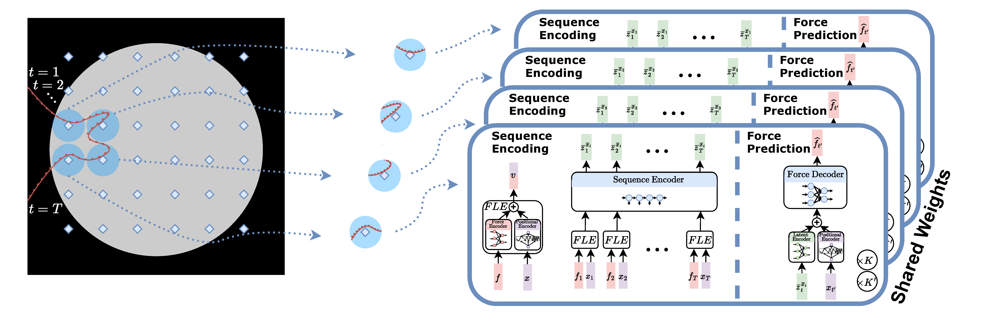
We then use each encoding to reconstruct a patch of the final image, creating an end-to-end local image prediction
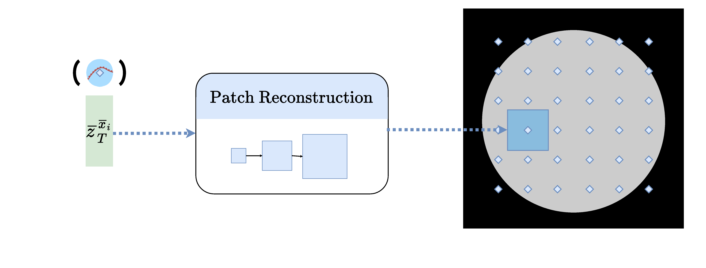
LESS is accurate in reconstructing the inner structure of a model from the tactile sequence
Due to the localized prediction, LESS produces a useful local uncertainty estimate
Due to the locality of LESS, we get an emergent compositional generalization
The model was only trained on single inclusions and yet it generalizes to multiple and connected ones at test time
Triple
Double
Connected Double
Connected Triple
Our model can zero-shot generalize to X4 larger phantoms, while it was only trained on a fixed size
Hand-held form factor is essential for clinical usability as it allows the physician to maneuver and maintain patient contact during examination
To mitigate the distribution shift when moving to human motions, we collected data from human-operated primitives
These primitives are crucial for effective transfer to human motions
To estimate the sensor pose, in place of the robot kinematics, we use a fiducial-based system
We show a proof-of-concept, real-time hand-held tactile imaging. Here, an operator can observe the model prediction and uncertainty in order to aim their movements
Finally, we produce an estimated prediction for the internal structure
@inproceedings{rimon2026less,
title = {More with {LESS}: Local Scene Representations for Tactile Imaging},
author = {Rimon, Zohar and Shafer, Elisei and Tepper, Tal and Kozin, Daniel
and Malka, Alon and Holland, Roy and Tamar, Aviv},
booktitle = {Robotics: Science and Systems},
year = {2026}
}